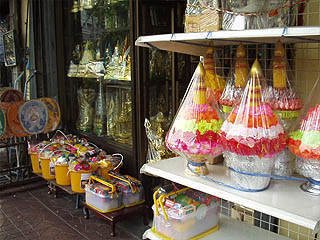
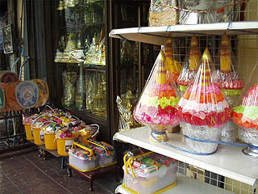
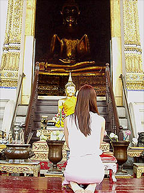

今回紹介するのは主にタイ中央部にある寺。特に地獄はタイ地獄四天王と呼んでも良い位の強烈な地獄だ。
 

参考文献
2003.12.〜2004.1
泰国超絶地獄列伝
微笑みの国、タイランド、御存じ世界屈指の仏教国である。
南方上座仏教の牙城であるこの国には沢山の寺がある。
タイ国内、何処へ行っても寺院（タイ語でワットという）は篤い信仰心に支えられ、きらびやかで豪華絢爛だ。

（写真はイメージです）
しかし今回はあえてこのような豪華な寺は一切無視して灼熱のタイ仏教に華開くもう一つの仏教、地獄巡りについて紹介したいと思う。
タイの寺に行くと本堂の壁などに釈迦の一生シリーズなどの仏教説話と共に地獄の様子を記した絵が描かれている事が多い。
その絵にはトゲトゲの木に登らされている人や顔が動物になっている人間などが良く登場し、タイ独特の地獄観が展開されている。
そんな地獄の様子を立体的にコンクリートの彫像で作り上げた奇妙な庭園がタイにはいくつかあるのだ。
以前、紹介したルアンプ−の寺もそうしたコンクリ像のキテレツ庭園だったが、今回紹介する寺はいずれもちゃんとした仏教寺院である。
しかし「仏教、こんな残酷でいいんですか？」と思わずコメントしてしまいそうなかなり強烈なヴィジュアルイメージが展開されている。
普段は虫も殺さないような静謐なイメージがあるタイ仏教だが、一皮めくれば内面にはこんな凄い心象風景を持っているのだ、という事を肝に命じていただきたい。恐らく従来抱いていたタイ仏教の概念がひっくり返る事請け合い。
強烈な地獄が続きますので残虐シーンが苦手な方にはあまりお薦めできないですね。
今回紹介するのは主にタイ中央部にある寺。特に地獄はタイ地獄四天王と呼んでも良い位の強烈な地獄だ。これとノーンカイのワットケークを足してタイ五大コンクリ仏天国（あ、地獄でしたね）と呼んでも差し支えないのではなかろうか。
あ、それともうひとつ、今回の旅の始めに出会った一冊の本の話を。
タイ到着初日に本屋で買った写真集なのだが、これが傑作で要はタイの大仏大集合といった内容のすんばらしい写真集なのだ。
この写真集に出会ってしまったおかげでのんびりとした旅程は瞬時に吹っ飛び、地獄と一緒に大仏も巡るというハードな日程に様変わりしてしまった。
WatPhaiRongWua/SuphanBuri
WatSriChum/Sukhothai
WatThawet/Sukhothai
WatSopharam/Sukhothai
WatPhaLokLoi/NakhonRatchasima
WatSapBon/Saraburi
WatPhraYai/Chonburi
WatSaenSuk/Chonburi
Sanctuary of Truth/Chonburi
聖なる木とお供物セット。バンコクにて。
参考文献
BUDDHA IN THE LANDSCAPE
by MARK STANDEN & JOHN HOSKIN
2003.12.〜2004.1
珍寺大道場 HOME